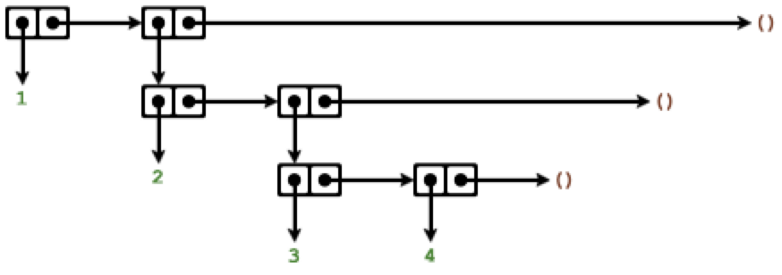

2.2 Hierarchical Data and the Closure Property
Table of Contents
- Introduction
- 2.2.1 Representing Sequences
- List Operations
list-ref-cdr-ing down the listlength-null?andcdr-ing down the whole listappend- "consup" an answer list whilecdr-ing down a list- Exercise 2.17 -
last-pair - Exercise 2.18 -
reverse - TODO Exercise 2.19 - Maturing change-counting program
- Exercise 2.20 - dotted-tail notation for procedures taking arbitrary number of arguments
- Mapping over lists
- List Operations
- 2.2.2 Hierarchical Structures
- 2.2.3 Sequences as Conventional Interfaces
- 2.2.4 Example: A Picture Language
Introduction
cons can be used to combine pairs. As a consequence, pairs provide a universal building block from which we can construct all sorts of data structures.
Closure property of cons - the ability to create pairs whose elements are pairs.
In general, closure property is satisfied by a certain data operation, if the result of the operation can be again used in the same operation.
Closure permits us to create hierarchical structures.
(Using procedures as parameters and return values is a closure too)
2.2.1 Representing Sequences
Sequence is an ordered collection of data objects.
There are many ways to represent sequence using pairs. One obvious way is to chain pairs in such a way that for each pair, car is an element in the sequence, and cdr is the next pair in the chain.
#lang sicp
(cons 1
(cons (2
(cons 3
(cons 4 nil)))))
application: not a procedure; expected a procedure that can be applied to arguments given: 2 context...: /var/folders/9t/w6bf6xgd4qs98pm22l9hcpk40000gn/T/ob-racket-XhKK50/ob-racketlhu7N6.rkt:4:0 body of "/var/folders/9t/w6bf6xgd4qs98pm22l9hcpk40000gn/T/ob-racket-XhKK50/ob-racketlhu7N6.rkt"
This sequence of pairs is called a list. Scheme provies list to help construct lists.
#lang sicp (define xs (list 1 2 3 4)) (car xs) (cadddr xs) (cons 10 xs) (cons 10 nil)
1 4 (10 1 2 3 4) (10)
The value of nil can be thought of as a sequence of elements, the empty list.
List Operations
list-ref - cdr-ing down the list
Given a list and a number n, list-ref returns n-th element of the list, starting from 0:
#lang sicp
(define (list-ref xs n)
(if (zero? n)
(car xs)
(list-ref (cdr xs) (- n 1))))
(list-ref (list 1 4 9 16 25) 3)
16
length - null? and cdr-ing down the whole list
#lang sicp
(define (length xs)
(if (null? xs)
0
(+ 1 (length (cdr xs)))))
(define (ilength items)
(define (iter xs acc)
(if (null? xs)
acc
(iter (cdr xs) (inc acc))))
(iter items 0))
(length (list 1 3 5 7 9))
(ilength (list 1 3 5 7 9))
5 5
append - "cons up" an answer list while cdr-ing down a list
#lang sicp
(define (append xs ys)
(if (null? xs)
ys
(cons (car xs) (append (cdr xs) ys))))
(append (list 1 2 3 4) (list 2 3 4 5))
(1 2 3 4 2 3 4 5)
Exercise 2.17 - last-pair
Define a procedure last-pair that returns the list that contains only the last element of a given (nonempty) list:
#lang sicp (define (last-pair xs) (cond ((null? xs) nil) ((null? (cdr xs)) xs) (else (last-pair (cdr xs))))) (last-pair nil) (last-pair (list 1)) (last-pair (list 1 2)) (last-pair (list 1 2 3 4 5 6))
() (1) (2) (6)
Exercise 2.18 - reverse
#lang sicp
(define (reverse items)
(define (iter xs acc)
(if (null? xs)
acc
(iter (cdr xs) (cons (car xs) acc))))
(iter items nil))
(reverse (list 1 2 3 4))
(reverse nil)
(reverse (list 1))
(4 3 2 1) () (1)
TODO Exercise 2.19 - Maturing change-counting program
Operations first-denomination, except-first-denomination, no-more? have simple counterparts in standard list operations - car, cdr, null?.
#lang sicp
(define (reverse items)
(define (iter xs acc)
(if (null? xs)
acc
(iter (cdr xs) (cons (car xs) acc))))
(iter items nil))
(define us-coins (list 50 25 10 5 1))
(define uk-coins (list 100 50 20 10 5 2 1 0.5))
(define (no-more? xs) (null? xs))
(define (except-first-denomination coin-values) (cdr coin-values))
(define (first-denomination coin-values) (car coin-values))
(define (cc amount coin-values)
(cond ((= amount 0) 1)
((or (< amount 0) (no-more? coin-values)) 0)
(else
(+ (cc amount
(except-first-denomination coin-values))
(cc (- amount
(first-denomination coin-values))
coin-values)))))
(cc 100 us-coins)
(cc 100 (reverse us-coins))
(cc 83 us-coins)
(cc 83 (reverse us-coins))
(cc 100 uk-coins)
(cc 100 (reverse uk-coins))
292 292 159 159 104561 104561
Exercise 2.20 - dotted-tail notation for procedures taking arbitrary number of arguments
#lang sicp
(define (same-parity x . xs)
(define (recur items)
(cond ((null? items)
nil)
((= (remainder x 2)
(remainder (car items) 2))
(cons (car items)
(recur (cdr items))))
(else
(recur (cdr items)))))
(cons x (recur xs)))
(same-parity 1 2 3 4 5 6 7)
(same-parity 2 3 4 5 6 7 8)
(same-parity 2 3 3 3 3 3)
(1 3 5 7) (2 4 6 8) (2)
Mapping over lists
One useful operation is to apply transformation to every item in a list and generate the list of results.
#lang sicp
(define (scale-list items factor)
(if (null? items)
nil
(cons (* (car items) factor)
(scale-list (cdr items) factor))))
(scale-list (list 1 2 3 4) 10)
(10 20 30 40)
We can abstract this general idea and capture it in a higher order procedure called map. map takes a procedure of one argument and a list, and returns a list of the results of applying a procedure to each element in the list.
#lang sicp
(define (map f xs)
(if (null? xs)
nil
(cons (f (car xs))
(map f (cdr xs)))))
(map abs (list 1 2 3 -4))
(map (lambda (x) (* x x))
(list -1 -2 -3 -4))
(define (scale-list items factor)
(map (lambda (x) (* x factor))
items))
(scale-list (list 1 2 3 4) 10)
(1 2 3 4) (1 4 9 16) (10 20 30 40)
Map is important because it captures a common pattern, but also because it establishes a higher level of abstraction in dealing with lists.
Defining scale-list in terms of map suppresses the level of detail found in the straightforward recursive implementation.
In effect map establishes an abstraction barrier that separates the usage of the pattern from its implementation
(Note: by establishing this level of abstraction map allows for parallel implementation of element-by-element transformation.)
Exercise 2.21 - map practice
#lang sicp
(define (square x) (* x x))
(define (square-list-1 items)
(if (null? items)
nil
(cons (square (car items)) (square-list-1 (cdr items)))))
(define (square-list-2 items)
(map square items))
(square-list-1 (list 1 2 3 4))
(square-list-2 (list 1 2 3 4))
(1 4 9 16) (1 4 9 16)
Exercise 2.22 - Iterative process reverses the list
It's in reverse order because in iteration step it cons-es square to the already computed list, which is formed from a prefix of input - later element goes before every earlier:
#lang sicp
(define (square x) (* x x))
(define (square-list items)
(define (iter things answer)
(if (null? things)
answer
(iter (cdr things)
(cons (square (car things))
answer))))
(iter items nil))
;; (iter '(1 2 3 4) '())
;; (iter '(2 3 4) '(1))
;; (iter '(3 4) '(4 1))
;; (iter '(4) '(9 4 1))
;; (iter '() '(16 9 4 1))
(square-list (list 1 2 3 4))
(16 9 4 1)
In the second version, answer is a pair, and (square (car things)) is a number. cons-ing first with the second does not produce a valid list:
#lang sicp
(define (square x) (* x x))
(define (square-list items)
(define (iter things answer)
(if (null? things)
answer
(iter (cdr things)
(cons answer
(square (car things))))))
(iter items nil))
(square-list (list 1 2 3 4))
((((() . 1) . 4) . 9) . 16)
Exercise 2.23 - for-each
#lang sicp
(define (for-each f items)
(define (iter xs)
(cond ((null? xs) #t)
(else
(f (car xs))
(iter (cdr xs)))))
(iter items))
(for-each (lambda (x) (display x)(newline)) (list 1 2 3 4))
1 2 3 4 #t
2.2.2 Hierarchical Structures
(list (list 1 2) 3 4) can be interpreted as a tree.
cond cases sequencing matter: (not (pair? nil)) is #t
#lang sicp (define x (cons (list 1 2) (list 3 4))) (define (count-leaves x) (cond ((null? x) 0) ((not (pair? x)) 1) (else (+ (count-leaves (car x)) (count-leaves (cdr x)))))) (length x) (count-leaves x) (count-leaves (list x x)) (list 1 (list 2 (list 3 4)))
3 4 8 (1 (2 (3 4)))
Exercise 2.24 - practice with nested lists
(list 1 (list 2 (list 3 4)))
Observe that (cons x y) != (list x y) = (cons x (cons y nil)).
If y is a list, then (cons 2 (list 3 4)) = (cons 2 (cons (list 3 4) nil)) = (cons 2 (cons (cons 3 (cons 4 nil)) nil)), not (cons 2 (cons 3 (cons 4 nil))).
The interpreter will print:
(1 (2 (3 4)))
The box-and-pointer diagram (work this out on paper, but the nice sdraw package for racket rendered this for the org):

The tree interpretation:
o
/ \
/ \
1 o
/ \
/ \
2 o
/ \
/ \
3 4
Exercise 2.25 - practice picking elements
#lang sicp (define a (list 1 3 (list 5 7) 9)) (define b (list (list 7))) (define c (list 1 (list 2 (list 3 (list 4 (list 5 (list 6 7))))))) a b c (car (cdr (car (cdr (cdr a))))) (car (car b)) (car (cdr (car (cdr (car (cdr (car (cdr (car (cdr (car (cdr c)))))))))))) (cadr (cadr (cadr (cadr (cadr (cadr c))))))
(1 3 (5 7) 9) ((7)) (1 (2 (3 (4 (5 (6 7)))))) 7 7 7 7
Exercise 2.26 - Distinguish append, cons and list
Prediction:
- V
(append x y) => (1 2 3 4 5 6) - X
(cons x y) => ((1 2 3) . (4 5 6))- if the second element to cons is a list, it will produce a new list with
carbeing first element of cons, andcdrbeing the second element of cons
- if the second element to cons is a list, it will produce a new list with
- V
(list x y) => ((1 2 3) (4 5 6))
#lang sicp (define x (list 1 2 3)) (define y (list 4 5 6)) (append x y) (cons x y) (list x y)
(1 2 3 4 5 6) ((1 2 3) 4 5 6) ((1 2 3) (4 5 6))
Exercise 2.27 - deep-reverse
Procedure deep-reverse takes a list as an argument, and returns a list with the same leaves elements as the input list, but every list element in reversed order.
The logic is as follows. For any given argument, it can be either a leave or a list, possibly empty. If it is an empty list or a leave, just return it. If it's a non-empty list, then reverse it, and apply deep-reverse to both its car and cdr, and cons the results.
#lang sicp
(define (reverse items)
(define (iter xs acc)
(if (null? xs)
acc
(iter (cdr xs) (cons (car xs) acc))))
(iter items nil))
(define (deep-reverse x)
(cond ((or (not (pair? x)) (null? x)) x)
(else
(let ((r (reverse x)))
(cons (deep-reverse (car r))
(deep-reverse (cdr r)))))))
(reverse (list (list 1 2) (list 3 4)))
(deep-reverse (list (list 1 2) (list 3 4)))
(deep-reverse (list (list (list 11 12) (list 21 22)) (list 3 4)))
((3 4) (1 2)) ((4 3) (2 1)) ((4 3) ((22 21) (12 11)))
Exercise 2.28 - fringe (unpack a tree)
fringe takes a tree and returns a list of the leaves of the tree arranged in the left-to-right order.
The recursive plan is similar to that of count-leaves, but with accumulating a list instead of a number:
If the argument is an empty list, return it; if a leave, wrap it in a singleton list and return; if a non-empty list, fringe both car and cdr, and append the results.
#lang sicp (define (fringe x) "Takes a list representation of a tree, returns a list with all leaves ordered left-to-right." (cond ((null? x) nil) ((not (pair? x)) (list x)) (else (append (fringe (car x)) (fringe (cdr x)))))) (define x (list (list 1 2) (list 3 4))) (fringe x) (fringe (list (list 1 2) (list 3 4) (list (list 5 6 7) (list 8 9) (list 10 11))))
(1 2 3 4) (1 2 3 4 5 6 7 8 9 10 11)
Exercise 2.29
A binary mobile consists of two branches, a left branch and a right branch. Each branch is a rod of a certain length, from which hanges either a weight or another binary mobile. We can represent a binary mobile using compound data by constructing it from two branches:
A branch is constructed from a length (a number) together with a structure (either a number for simple weight, or another mobile):
Here are constructors and selectors:
(define (make-mobile left right) (list left right)) (define (left-branch m) (car m)) (define (right-branch m) (cadr m)) (define (make-branch length structure) (list length structure)) (define (branch-length b) (car b)) (define (branch-structure b) (cadr b))
Implementation for total-weight and mobile-balanced?
(define (branch-complex? b)
(pair? (branch-structure b)))
(define (branch-weight b)
(if (branch-complex? b)
(total-weight (branch-structure b))
(branch-structure b)))
(define (branch-torque b)
(* (branch-weight b)
(branch-length b)))
(define (total-weight m)
(+ (branch-weight (left-branch m))
(branch-weight (right-branch m))))
(define (branch-balanced? b)
(if (branch-complex? b)
(mobile-balanced? (branch-structure b))
#t))
(define (mobile-balanced? m)
(let ((l (left-branch m))
(r (right-branch m)))
(and (branch-balanced? l)
(branch-balanced? r)
(= (branch-torque l)
(branch-torque r)))))
/var/folders/9t/w6bf6xgd4qs98pm22l9hcpk40000gn/T/ob-racket-hKyoaq/ob-racketLrZdGN.rkt:4:10: branch-structure: unbound identifier in: branch-structure location...: /var/folders/9t/w6bf6xgd4qs98pm22l9hcpk40000gn/T/ob-racket-hKyoaq/ob-racketLrZdGN.rkt:4:10
Run the examples:
#lang sicp (define m1 (make-mobile (make-branch 1 15) (make-branch 3 (make-mobile (make-branch 1 5) (make-branch 1 5))))) (define m2 (make-mobile (make-branch 1 18) (make-branch 1 (make-mobile (make-branch 1 9) (make-branch 1 (make-mobile (make-branch 1 6) (make-branch 2 3))))))) (total-weight m1) (mobile-balanced? m1) (mobile-balanced? m2)
25 #f #t
d. Checking if anything in program depends on representation. Updated constructors and selectors:
(define (make-mobile left right) (cons left right)) (define (left-branch m) (car m)) (define (right-branch m) (cdr m)) (define (make-branch length structure) (cons length structure)) (define (branch-length b) (car b)) (define (branch-structure b) (cdr b))
Run the examples:
#lang sicp (define m1 (make-mobile (make-branch 1 15) (make-branch 3 (make-mobile (make-branch 1 5) (make-branch 1 5))))) (define m2 (make-mobile (make-branch 1 18) (make-branch 1 (make-mobile (make-branch 1 9) (make-branch 1 (make-mobile (make-branch 1 6) (make-branch 2 3))))))) (total-weight m1) (mobile-balanced? m1) (mobile-balanced? m2)
25 #f #t
Mapping over trees
#lang sicp
(define (scale-tree tree factor)
(cond ((null? tree) nil)
((not (pair? tree)) (* tree factor))
(else (cons (scale-tree (car tree) factor)
(scale-tree (cdr tree) factor)))))
(scale-tree (list (list 1 2) (list (list 2 3 4) (list 6 7)))
10)
(define (scale-tree-map tree factor)
(map (lambda (sub-tree)
(if (pair? sub-tree)
(scale-tree-map sub-tree factor)
(* sub-tree factor)))
tree))
((10 20) ((20 30 40) (60 70)))
Exercise 2.30 - square-tree
Define a procedure square-tree a) directly b) with map
#lang sicp
(define (square x) (* x x))
(define (square-tree-a tree)
(cond ((null? tree) nil)
((not (pair? tree)) (square tree))
(else
(cons (square-tree-a (car tree))
(square-tree-a (cdr tree))))))
(define (square-tree-b tree)
(map (lambda (x)
(if (not (pair? x))
(square x)
(square-tree-b x)))
tree))
(square-tree-a
(list 1
(list 2 (list 3 4) 5)
(list 6 7)))
(square-tree-b
(list 1
(list 2 (list 3 4) 5)
(list 6 7)))
(1 (4 (9 16) 25) (36 49)) (1 (4 (9 16) 25) (36 49))
Exercise 2.31 - tree-map
#lang sicp
(define (tree-map f tree)
(map (lambda (x)
(if (not (pair? x))
(f x)
(tree-map f x)))
tree))
(define (square x) (* x x))
(define (square-tree tree) (tree-map square tree))
(square-tree (list 1 2 (list 3 4 5 (list 6 7)) (list 8 (list 9))))
(1 4 (9 16 25 (36 49)) (64 (81)))
Exercise 2.32 - Subsets of a set
We can represent a set as a list of distinct element, and a set of subsets of the set with a list of lists.
The recursive plan is as follows: If the set is empty, then the set of subsets has one element - an empty set. Otherwise, every subset of the set either contain the first element or it doesn't. Compute the set of subsets of the set without the first element, and use it to construct another set of subsets of the set, each having the first element.
#lang sicp
(define (subsets s)
(if (null? s)
(list nil)
(let ((rest (subsets (cdr s)))
(first (car s)))
(append rest
(map (lambda (x) (cons first x))
rest)))))
(subsets (list 1 2 3))
(() (3) (2) (2 3) (1) (1 3) (1 2) (1 2 3))
2.2.3 Sequences as Conventional Interfaces
Introduces the conventional interfaces design principle.
These two procedures are superficially not having much in common:
#lang sicp
(define (sum-odd-squares tree)
(cond ((null? tree) 0)
((not (pair? tree))
(if (odd? tree) (square tree) 0))
(else (+ (sum-odd-squares (car tree))
(sum-odd-squares (cdr tree))))))
(define (even-fibs n)
(define (next k)
(if (> k n)
nil
(let ((f (fib k)))
(if (even? f)
(cons f (next (+ k 1)))
(next (+ k 1))))))
(next 0))
/var/folders/9t/w6bf6xgd4qs98pm22l9hcpk40000gn/T/ob-racket-HDLngB/ob-racketRqtiiR.rkt:7:26: square: unbound identifier in: square location...: /var/folders/9t/w6bf6xgd4qs98pm22l9hcpk40000gn/T/ob-racket-HDLngB/ob-racketRqtiiR.rkt:7:26
A more abstract description of the two computations reveal a great deal of similarity:
(sum-odd-squares tree):
- enumerate all leaves of the tree
- filter, selecting only odd leaves
- square those
- accumulate the result using + starting with 0
(even-fibs n):
- enumerate the integers from 0 to n;
- compute the Fibonacci number for each integer
- filter, selecting only even numbers
- accumulate the result using
consstart with an empty list
In signal-processing style, we could have each of these steps in separate procedures.
With recursive definition, these steps are spread across different parts of the program - these recursive procedures decompose computation in a different way.
Sequence Operations
If we represent signals as lists, then we can use list operations to implement the processing at each of the stages.
Mapping stage:
(map (lambda (x) (* x x)) (list 1 2 3 4 5))
'(1 4 9 16 25)
Filter stage:
(define (filter predicate sequence) (cond ((null? sequence) nil) ((predicate (car sequence)) (cons (car sequence) (filter predicate (cdr sequence)))) (else (filter predicate (cdr sequence)))))
Accumulation stage:
(define (accumulate op initial sequence)
(if (null? sequence)
initial
(op (car sequence)
(accumulate op initial (cdr sequence)))))
15 120
Enumeration for the two procecdures:
(define (enumerate-interval low high)
(if (> low high)
nil
(cons low (enumerate-interval (inc low) high))))
(define (enumerate-tree tree)
(cond ((null? tree) nil)
((not (pair? tree))
(list tree))
(else
(append (enumerate-tree (car tree))
(enumerate-tree (cdr tree))))))
#lang sicp
(define (filter predicate sequence)
(cond ((null? sequence) nil)
((predicate (car sequence))
(cons (car sequence)
(filter predicate (cdr sequence))))
(else (filter predicate (cdr sequence)))))
(define (accumulate op initial sequence)
(if (null? sequence)
initial
(op (car sequence)
(accumulate op initial (cdr sequence)))))
(define (enumerate-interval low high)
(if (> low high)
nil
(cons low (enumerate-interval (inc low) high))))
(define (enumerate-tree tree)
(cond ((null? tree) nil)
((not (pair? tree))
(list tree))
(else
(append (enumerate-tree (car tree))
(enumerate-tree (cdr tree))))))
(enumerate-interval 2 10)
(enumerate-tree (list (list 1 2) (list (list 3 4) 5)))
(accumulate + 0 (list 1 2 3 4 5))
(accumulate * 1 (list 1 2 3 4 5))
(filter odd? (list 1 2 3 4 5))
(2 3 4 5 6 7 8 9 10) (1 2 3 4 5) 15 120 (1 3 5)
Now we can reformulate sum-odd-square and even-fibs in the signal-processing style.
#lang sicp
(define (filter predicate sequence)
(cond ((null? sequence) nil)
((predicate (car sequence))
(cons (car sequence)
(filter predicate (cdr sequence))))
(else (filter predicate (cdr sequence)))))
(define (accumulate op initial sequence)
(if (null? sequence)
initial
(op (car sequence)
(accumulate op initial (cdr sequence)))))
(define (enumerate-interval low high)
(if (> low high)
nil
(cons low (enumerate-interval (inc low) high))))
(define (enumerate-tree tree)
(cond ((null? tree) nil)
((not (pair? tree))
(list tree))
(else
(append (enumerate-tree (car tree))
(enumerate-tree (cdr tree))))))
(define (square x) (* x x))
(define (sum-odd-squares tree)
(accumulate +
0
(map square
(filter odd?
(enumerate-tree tree)))))
(define (fib-rec n)
(if (or (= n 0) (= n 1))
n
(+ (fib-rec (- n 1))
(fib-rec (- n 2)))))
(define (fib n)
(define (iter a b counter)
(if (= counter 0)
a
(iter b (+ a b) (dec counter))))
(iter 0 1 n))
(define (even-fibs n)
(accumulate cons nil (filter even? (map fib (enumerate-interval 1 n)))))
(sum-odd-squares (list (list 1 2 3) (list 2 4)))
(even-fibs 10)
(fib-rec 3)
(fib 3)
10 (2 8 34) 2 2
Expressing programs using sequence operators helps to make modular designs, where program is consturcted from relatively independent pieces.
Example of signal processing style operations reuse:
#lang sicp
(define (filter predicate sequence)
(cond ((null? sequence) nil)
((predicate (car sequence))
(cons (car sequence)
(filter predicate (cdr sequence))))
(else (filter predicate (cdr sequence)))))
(define (accumulate op initial sequence)
(if (null? sequence)
initial
(op (car sequence)
(accumulate op initial (cdr sequence)))))
(define (enumerate-interval low high)
(if (> low high)
nil
(cons low (enumerate-interval (inc low) high))))
(define (enumerate-tree tree)
(cond ((null? tree) nil)
((not (pair? tree))
(list tree))
(else
(append (enumerate-tree (car tree))
(enumerate-tree (cdr tree))))))
(define (square x) (* x x))
(define (fib n)
(define (iter a b c)
(if (zero? c)
a
(iter b (+ a b) (dec c))))
(iter 0 1 n))
(define (list-fib-squares n)
(accumulate cons
nil
(map square
(map fib
(enumerate-interval 0 n)))))
(define (product-of-squares-of-odd-elements sequence)
(accumulate *
1
(map square
(filter odd?
sequence))))
(list-fib-squares 10)
(product-of-squares-of-odd-elements (list 1 2 3 4 5))
(0 1 1 4 9 25 64 169 441 1156 3025) 225
Again, these conventional sequence operations form an abstraction barrier for dealing with sequences - underlying implementation can be changed and the user code will stay intact.
Exercise 2.33 - accumulate practice
#lang sicp (define (map p sequence) (accumulate (lambda (x y) (cons (p x) y)) nil sequence)) (define (append seq1 seq2) (accumulate cons seq2 seq1)) (define (length sequence) (accumulate (lambda (x y) (inc y)) 0 sequence)) (map odd? (list 1 2 3 4 5)) (append (list 1 2 3) (list 4 5)) (length (list 1 2 3 4))
(#t #f #t #f #t) (1 2 3 4 5) 4
Exercise 2.34 - polynomial evaluation using Horner's rule
Evaluate \[ a_nx^n+a_{n-1}x^n+...+a_0 \]
using \[ (...(a_nx+a_{n-1})x+...+a_1)x+a_0 \]
#lang sicp (define (horner-eval x coefficient-sequence) (accumulate (lambda (this-coeff higher-terms) (+ this-coeff (* x higher-terms))) 0 coefficient-sequence)) (horner-eval 2 (list 1 3 0 5 0 1))
79
Check it's actually correct (in maxima):
display(subst([x=2], x^5 + 5*x^3 + 3*x + 1));
5 3
subst([x = 2], x + 5 x + 3 x + 1) = 79
Exercise 2.35 - count-leave as an accumulation
#lang sicp (define (count-leaves-r x) (cond ((null? x) 0) ((not (pair? x)) 1) (else (+ (count-leaves-r (car x)) (count-leaves-r (cdr x)))))) ;; ;; naked (length (enumerate-tree x)) ;; (define (count-leaves x) ;; (accumulate + ;; 0 ;; (map (lambda (x) 1) (enumerate-tree x)))) ;; map op launches recursion (define (count-leaves x) (accumulate + 0 (map (lambda (el) (cond ((not (pair? el)) 1) (else (count-leaves el)))) x))) ;; accumulate op launches recursion - feels bad because "mapping" logic is mixed with the "accumulation" logic (define (count-leaves-1 x) (accumulate (lambda (el acc) (cond ((not (pair? el)) (inc acc)) (else (+ (count-leaves-1 el) )))) 0 (map identity x))) (count-leaves (list 1 2 (list 3 4) (list 4 5)))
6
Exercise 2.36 - accumulate-n
Like accumulate, but takes op, init and seqs, a list of lists of same length say l, and returns a list of length l where first element is op applied to first elements of lists in seqs, second to second and so on.
#lang sicp
(define (accumulate op init seq)
(if (null? seq)
init
(op (car seq)
(accumulate op init (cdr seq)))))
(define (zip seqs)
(if (null? (car seqs))
nil
(cons (map car seqs)
(zip (map cdr seqs)))))
(define (accumulate-n-2 op init seqs)
(map
(lambda (z)
(accumulate op init z))
(zip seqs)))
(define (accumulate-n op init seqs)
(if (null? (car seqs))
nil
(cons (accumulate op init (map car seqs))
(accumulate-n op init (map cdr seqs)))))
(accumulate-n
+
0
(list (list 1 2 3)
(list 4 5 6)
(list 7 8 9)
(list 10 11 12)))
(accumulate-n-2
+
0
(list (list 1 2 3)
(list 4 5 6)
(list 7 8 9)
(list 10 11 12)))
(22 26 30) (22 26 30)
Exercise 2.37 - matrix operations
Represent vector as a sequence of numbers, and matrix as sequence of row vectors.
E.g. the matrix \(\begin{bmatrix}
1 & 2 & 3 & 4\\
4 & 5 & 6 & 6\\
6 & 7 & 8 & 9
\end{bmatrix}\) can be represente as the sequence ((1 2 3 4) (4 5 6 6) (6 7 8 9)).
#lang sicp
(define (accumulate op init seq)
(if (null? seq)
init
(op (car seq)
(accumulate op init (cdr seq)))))
(define (accumulate-n op init seqs)
(if (null? (car seqs))
init
(cons (accumulate op init (map car seqs))
(accumulate-n op init (map cdr seqs)))))
(define (dot-product v w)
(accumulate + 0 (map * v w)))
(dot-product (list 1 2 3) (list 4 5 6))
(define (matrix-*-vector m v)
(map (lambda (r) (dot-product v r)) m))
(matrix-*-vector (list (list 4 5 6) (list 1 3 5))
(list 1 2 3))
(define (transpose m)
(accumulate-n cons nil m))
(define (matrix-*-matrix m n)
(let ((cols (transpose n)))
(map (lambda (mrow)
(matrix-*-vector cols mrow))
m)))
(matrix-*-matrix (list (list 4 5 6) (list 1 3 5))
(list (list 1 2) (list 2 4) (list 8 6)))
32 (32 22) ((62 64) (47 44))
Check with maxima:
v: [1, 2, 3]$ w: [4, 5, 6]$ display(v . w); m: matrix([4,5,6], [1,3,5])$ display(m . v); n: matrix([1,2], [2,4], [8,6])$ display(m . n);
[1, 2, 3] . [4, 5, 6] = 32
[ 4 5 6 ] [ 32 ]
[ ] . [1, 2, 3] = [ ]
[ 1 3 5 ] [ 22 ]
[ 1 2 ]
[ 4 5 6 ] [ ] [ 62 64 ]
[ ] . [ 2 4 ] = [ ]
[ 1 3 5 ] [ ] [ 47 44 ]
[ 8 6 ]
Exercise 2.38 - fold-left
(define (fold-right op initial seq)
(if (null? seq)
initial
(op (car seq)
(fold-right op initial (cdr seq)))))
(define (fold-left op initial seq)
(define (iter result rest)
(if (null? rest)
result
(iter (op result (car rest))
(cdr rest))))
(iter initial seq))
#lang sicp (fold-right / 1 (list 1 2 3)) ;; 3/2 (fold-left / 1 (list 1 2 3)) ;; 1/6 (fold-right list nil (list 1 2 3)) ;; (1 (2 (3 nil))) (fold-left list nil (list 1 2 3)) ;; (((nil 1) 2) 3) (fold-right + 0 (list 1 2 3)) ;; 3/2 (fold-left + 0 (list 1 2 3)) ;; 1/6
3/2 1/6 (1 (2 (3 ()))) (((() 1) 2) 3) 6 6
For fold-right and fold-left to produce identical results, the op should be commutative.
Exercise 2.39 - reverse in terms of folds
#lang sicp (define (reverse1 seq) (fold-right (lambda (x y) ;; y is the reversed part of seq right of x, so x should be inserted in the end (append y (list x))) nil seq)) (define (reverse2 seq) (fold-left (lambda (x y) (cons y x)) ;; x is the reversed part of seq left of y, so y should be inserted at the beginning nil seq)) (reverse1 (list 1 2 3)) (reverse2 (list 1 2 3))
(3 2 1) (3 2 1)
Nested Mappings
prime sum pairs - flatmap and nested map
Consider the problem: Given a positive integer \(n\), find all ordered pairs of distinct positive integers \(i\) and \(j\) where \(1 \le j \lt i \le n\), such that \(i + j\) is prime.
For example:
| i | 2 | 3 | 4 | 4 | 5 | 6 | 6 |
| j | 1 | 2 | 1 | 3 | 2 | 1 | 5 |
| i+j | 3 | 5 | 5 | 7 | 7 | 7 | 11 |
Solution approach: for each integer \(i \le n\) enumerate integers \(j < i\), and for each such \(i\), \(j\) generate pair (i j).
#lang sicp
(define n 6)
;; (enumerate-interval 1 6)
;; (map (lambda (i)
;; (map (lambda (j)
;; (list i j))
;; (enumerate-interval 1 (- i 1))))
;; (enumerate-interval 1 6))
;; for each i, generate a list of lists of pairs with i and j<i, and then join lists
;; (accumulate append
;; nil
;; (map (lambda (i)
;; (map (lambda (j) (list i j))
;; (enumerate-interval 1 (- i 1))))
;; (enumerate-interval 1 n)))
(define (flatmap proc seq)
(accumulate append nil (map proc seq)))
(define (prime? n)
(define (square x) (* x x))
(define (iter d)
(cond ((> (square d) n)
#t)
((zero? (remainder n d))
#f)
(else
(iter (inc d)))))
(iter 2))
(define (prime-sum? pair)
(prime? (+ (car pair) (cadr pair))))
(define (make-pair-sum pair)
(list (car pair)
(cadr pair)
(+ (car pair) (cadr pair))))
(define (prime-sum-pairs n)
(map make-pair-sum
(filter prime-sum?
(flatmap (lambda (i)
(map (lambda (j) (list i j))
(enumerate-interval 1 (- i 1))))
(enumerate-interval 1 n)))))
(prime-sum-pairs 6)
((2 1 3) (3 2 5) (4 1 5) (4 3 7) (5 2 7) (6 1 7) (6 5 11))
Permutations
#lang sicp
(define (filter predicate seq)
(cond ((null? seq) nil)
((predicate (car seq))
(cons (car seq)
(filter predicate (cdr seq))))
(else
(filter predicate (cdr seq)))))
(define (accumulate op initial seq)
(if (null? seq)
initial
(op (car seq)
(accumulate op initial (cdr seq)))))
(define (flatmap proc seq)
(accumulate append nil (map proc seq)))
(define (remove seq item)
"remove all occurences of item in seq"
(filter (lambda (x)
(not (= x item)))
seq))
(define (excluding s x)
"remove the first occurence of x in s"
(cond ((null? s) nil)
((= x (car s))
(cdr s))
(else
(cons (car s)
(excluding (cdr s) x)))))
(define (permutations s)
(if (null? s)
(list nil)
(flatmap (lambda (x)
(map (lambda (p)
(cons x p))
(permutations (remove s x))))
s)))
(permutations (list 1 2 3))
((1 2 3) (1 3 2) (2 1 3) (2 3 1) (3 1 2) (3 2 1))
Exercise 2.40 - unique-pairs
#lang sicp
(define (flatmap proc seq)
(accumulate append nil (map proc seq)))
(define (unique-pairs n)
"Generates a sequence of pairs (i j) such that 1 <= i < j <= n"
(flatmap (lambda (i)
(map (lambda (j)
(list i j))
(enumerate-interval 1 (- i 1))))
(enumerate-interval 1 n)))
(define (pair-with-sum p)
(list (car p)
(cadr p)
(+ (car p) (cadr p))))
(define (prime? n)
(define (iter d)
(cond ((> (* d d) n) #t)
((zero? (remainder n d)) #f)
(else
(iter (inc d)))))
(iter 2))
(define (prime-sum? p)
(prime? (+ (car p) (cadr p))))
(define (prime-sum-pairs n)
(map pair-with-sum
(filter prime-sum?
(unique-pairs n))))
(prime-sum-pairs 6)
((2 1 3) (3 2 5) (4 1 5) (4 3 7) (5 2 7) (6 1 7) (6 5 11))
Exercise 2.41 - triples of given sum
Write a procedure to find all ordered triples of distinct positive integers i, j, k less than or equal to a given integer n that sum to a given integer s.
#lang sicp
(define (flatmap proc seq) (accumulate append nil (map proc seq)))
(define (enumerate-k-tuples k n)
(if (zero? k)
(list nil)
(flatmap (lambda (x)
(map (lambda (t) (cons x t))
(enumerate-k-tuples (dec k) n)))
(enumerate-interval 1 n))))
(define (sum xs) (accumulate + 0 xs))
(define (distinct3? t)
(and (not (= (car t) (cadr t)))
(not (= (car t) (caddr t)))
(not (= (cadr t) (caddr t)))))
(define (triples-of-sum n s)
(filter (lambda (t)
(= (sum t) s))
(filter distinct3?
(enumerate-k-tuples 3 n))))
(triples-of-sum 10 8)
((1 2 5) (1 3 4) (1 4 3) (1 5 2) (2 1 5) (2 5 1) (3 1 4) (3 4 1) (4 1 3) (4 3 1) (5 1 2) (5 2 1))
Exercise 2.42 - eight-queens puzzle
#lang sicp
(define (flatmap op seq) (accumulate append nil (map op seq)))
(define (contains? haystack needle)
(cond ((null? haystack) #f)
((= needle (car haystack)) #t)
(else (contains? (cdr haystack) needle))))
(define empty-board nil)
(define (make-pos r c) (cons r c))
(define (row-pos p) (car p))
(define (col-pos p) (cdr p))
(define (put-queen board r c)
(cons (make-pos r c) board))
(define (safe? queens c)
"#t <=> the queen in the column c is not attacked by any other of queens."
(define (iter queens attacked c-queen-row)
(cond ((null? queens)
(not (contains? attacked c-queen-row)))
((= c (col-pos (car queens)))
(iter (cdr queens)
attacked
(row-pos (car queens))))
(else
(iter (cdr queens)
(let ((q-row (row-pos (car queens)))
(distance (- c (col-pos (car queens)))))
(append (list (- q-row distance)
q-row
(+ q-row distance))
attacked))
c-queen-row))))
(iter queens nil -999999))
(define (queens board-size)
(define (queen-cols k)
"Returns a list of boards with safely placed queens in the first k columns."
(if (zero? k)
(list empty-board)
(filter (lambda (queens)
(safe? queens k))
(flatmap (lambda (queens)
(map (lambda (row)
(put-queen queens row k))
(enumerate-interval 1 board-size)))
(queen-cols (- k 1))))))
(queen-cols board-size))
(queens 4)
(length (queens 10))
(length (queens 9))
(length (queens 8))
(length (queens 7))
(length (queens 6))
(length (queens 5))
(((3 . 4) (1 . 3) (4 . 2) (2 . 1)) ((2 . 4) (4 . 3) (1 . 2) (3 . 1))) 724 352 92 40 4 10
empty_board = ()
def with_pos(board, r, c):
return ((r, c),) + board
def safe(queens, c):
c_queen_row = None
attacked_rows_in_c = []
for q in queens:
qr, qc = q
if qc == c:
c_queen_row = qr
else:
distance = c - qc
attacked_rows_in_c.extend([
qr - distance,
qr,
qr + distance
])
return c_queen_row not in attacked_rows_in_c
def queens(board_size):
def queen_cols(k):
"Returns a list of boards with queens safely placed in first k columns"
if k == 0:
return [empty_board]
results = []
for board in queen_cols(k-1):
for row in range(1, board_size+1):
new_board = with_pos(board, row, k)
if safe(new_board, k):
results.append(new_board)
return results
return queen_cols(board_size)
return queens(4)
| (3 4) | (1 3) | (4 2) | (2 1) |
| (2 4) | (4 3) | (1 2) | (3 1) |
Exercise 2.43 - Deoptimized queens
(flatmap (lambda (new-row) (map (lambda (rest-of-queens) (adjoin-position new-row k rest-of-queens)) (queen-cols (- k 1)))) (enumerate-interval 1 board-size))
/var/folders/9t/w6bf6xgd4qs98pm22l9hcpk40000gn/T/ob-racket-1zia2E/ob-racketLiFO1U.rkt:3:1: flatmap: unbound identifier in: flatmap location...: /var/folders/9t/w6bf6xgd4qs98pm22l9hcpk40000gn/T/ob-racket-1zia2E/ob-racketLiFO1U.rkt:3:1
Problem is that for each call of (queen-cols k), there are board-size calls to (queen-cols k). Given that there board-size levels of recursion, let \(n =\) board-size, there are \(n^n\) call in total, while original version contains \(n\) calls.
#lang sicp
(define (flatmap op seq) (accumulate append nil (map op seq)))
(define (contains? haystack needle)
(cond ((null? haystack) #f)
((= needle (car haystack)) #t)
(else (contains? (cdr haystack) needle))))
(define empty-board nil)
(define (make-pos r c) (cons r c))
(define (row-pos p) (car p))
(define (col-pos p) (cdr p))
(define (put-queen board r c)
(cons (make-pos r c) board))
(define (safe? queens c)
"#t <=> the queen in the column c is not attacked by any other of queens."
(define (iter queens attacked c-queen-row)
(cond ((null? queens)
(not (contains? attacked c-queen-row)))
((= c (col-pos (car queens)))
(iter (cdr queens)
attacked
(row-pos (car queens))))
(else
(iter (cdr queens)
(let ((q-row (row-pos (car queens)))
(distance (- c (col-pos (car queens)))))
(append (list (- q-row distance)
q-row
(+ q-row distance))
attacked))
c-queen-row))))
(iter queens nil -999999))
(define (queens board-size)
(define (queen-cols k)
"Returns a list of boards with safely placed queens in the first k columns."
(if (zero? k)
(list empty-board)
(filter (lambda (queens)
(safe? queens k))
(flatmap (lambda (queens)
(map (lambda (row)
(put-queen queens row k))
(enumerate-interval 1 board-size)))
(queen-cols (- k 1))))))
(queen-cols board-size))
(define (queens-deoptimized board-size)
(define (queen-cols k)
"Returns a list of boards with safely placed queens in the first k columns."
(if (zero? k)
(list empty-board)
(filter (lambda (queens)
(safe? queens k))
(flatmap
(lambda (new-row)
(map (lambda (rest-of-queens)
(put-queen rest-of-queens new-row k))
(queen-cols (- k 1))))
(enumerate-interval 1 board-size)))))
(queen-cols board-size))
(define (measure f . args)
(let ((start (* 1.0 (runtime))))
(apply f args)
(- (runtime) start)))
(define (pow b p)
(define (square x) (* x x))
(cond ((zero? p) 1)
((even? p) (square (pow b (/ p 2))))
(else (* b (pow b (- p 1))))))
(/ (log (/ (measure queens-deoptimized 9) (measure queens 9)))
(log 9))
(/ (log (/ (measure queens-deoptimized 8) (measure queens 8)))
(log 8))
(/ (log (/ (measure queens-deoptimized 7) (measure queens 7)))
(log 7))
(/ (log (/ (measure queens-deoptimized 6) (measure queens 6)))
(log 6))
3.989833040411312 3.455462871043414 2.964135395540165 2.3038839284458783
2.2.4 Example: A Picture Language
The picture language
Recap: language is described in terms of primitives, means of combination and means of abstraction.
Painter is the only kind of element. A painter draws an image that is shifted and scaled to fit within a designated parallelogram-shaped frame. The actual shape of the drawing depends on the frameof which has its own target.